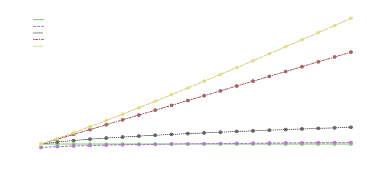
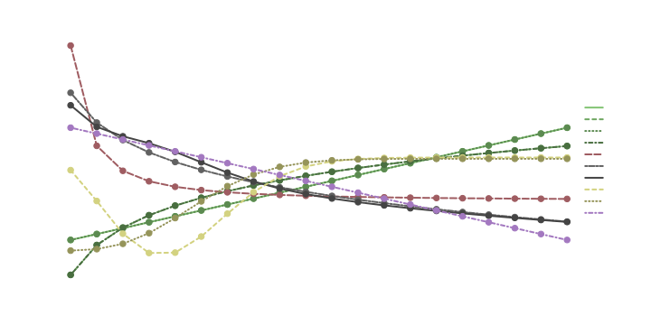
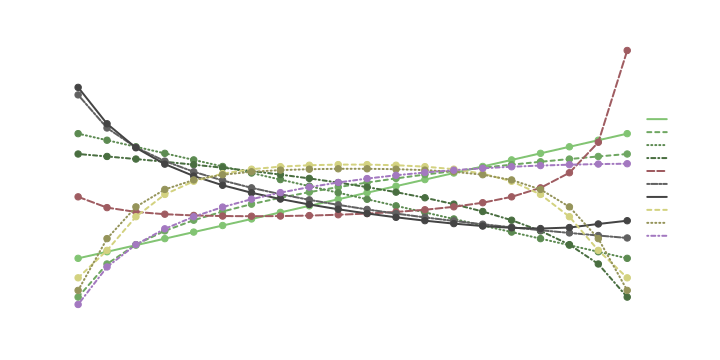

This introduction uses lingmatch to illustrate a few of the many branching paths of text analysis.
Built with R 4.2.1 on September 05 2022
Setup
First, we need some text – anything that results in a vector of text will do.
text <- c(
"Hey, I like kittens. I think all kinds of cats really are just the best pet ever.",
"Oh yeah? Well I really like cars. All the wheels and the turbos... I think that's
the best ever.",
"You know what? Poo on you. Cats, dogs, rabbits -- you know, living creatures... to
think you'd care about anything else!",
"You can stick to your opinion. You can not be right if you want. You know what
life's about? Supercharging, diesel guzzling, exhaust spewing, piston moving
ignitions."
)Manual Processing
We’ll be taking a ‘bag of words’ approach to this text, which means standardizing and aggregating words for the sake of simplicity.
The first step can be to convert all of the characters to lower case:
# we'll name the processed text "words" since it will eventually be single words
words <- tolower(text)
words[1]
#> [1] "hey, i like kittens. i think all kinds of cats really are just the best pet ever."Another standardizing step can be to remove punctuation, which will involve some regular expression.
Regular expression is a refined way to parse strings of characters. Forms of regular expression are implemented in most programming languages. It can be tricky to think with, but offers a great deal of control when it comes to parsing text.
We can use the gsub function to replace all of the characters we specify with nothing.
# you can get a feel for the way gsub works by entering an example string;
# the first argument is the expression to match, the second is what to replace it with,
# and the third is the text, so this will replace the blank space with an asterisk
gsub(" ", "*", "a b")
#> [1] "a*b"
# []s define a set of single characters, and the + will match any repeats,
# so one or more of the characters inside the brackets will be replaced with nothing.
# entering a vector into the third position will apply the replacement to each element
words <- gsub("[,.?!\n-]+", "", words)
words[1]
#> [1] "hey i like kittens i think all kinds of cats really are just the best pet ever"The strsplit function splits one string into many based on a regular expression string.
# this applies to each element of the vector, and returns a list of vectors
words <- strsplit(words, " +")Now we have a list of tokens (the words object) which
corresponds to our original text:
# the first text
text[1]
#> [1] "Hey, I like kittens. I think all kinds of cats really are just the best pet ever."
# the tokenized version of that text
words[[1]]
#> [1] "hey" "i" "like" "kittens" "i" "think" "all"
#> [8] "kinds" "of" "cats" "really" "are" "just" "the"
#> [15] "best" "pet" "ever"Now that we have all of our words separated, we can translate the original texts into numerical vectors, resulting in a document-term matrix (DTM).
The first step can be to set up an empty matrix, with a row for each text, and a column for each unique word:
# since our words are in a list, we need to unlist them, then get only the unique ones
# you don't need to sort the words, but it can make it easier to look through
unique_words <- sort(unique(unlist(words)))
# then we can make a matrix of 0s, and put the unique words in as column names
dtm <- matrix(
0, length(text), length(unique_words),
dimnames = list(NULL, unique_words)
)
dtm[, 1:10]
#> about all and anything are be best can care cars
#> [1,] 0 0 0 0 0 0 0 0 0 0
#> [2,] 0 0 0 0 0 0 0 0 0 0
#> [3,] 0 0 0 0 0 0 0 0 0 0
#> [4,] 0 0 0 0 0 0 0 0 0 0Now we can fill the matrix with counts for each word for each text. We can count up all of the words at once, so we only have to loop through texts:
# this will perform what's inside the curly brackets as many times as there are texts
# i will be set to each number in the sequence, so i will equal 1 on the first run
# the words and dtm objects all line up, so words[[i]] corresponds to dtm[i,]
for (i in seq_along(words)) {
# we can use the table function to count the words in a text
counts <- table(words[[i]])
# now the counts object has words associated with their count for the ith text
# to get this into the dtm, we can use i to select the row,
# and counts' names to select the columns
dtm[i, names(counts)] <- counts
}
# now dtm is filled in with counts for each text
dtm[, 1:10]
#> about all and anything are be best can care cars
#> [1,] 0 1 0 0 1 0 1 0 0 0
#> [2,] 0 1 1 0 0 0 1 0 0 1
#> [3,] 1 0 0 1 0 0 0 0 1 0
#> [4,] 1 0 0 0 0 1 0 2 0 0Processing with lingmatch
The lma_dtm function from the lingmatch package will do the same sort of processing we just walked through.
# load in the lingmatch package
library(lingmatch)
dtm <- lma_dtm(text, sparse = FALSE)
dtm[, 1:10]
#> about all and anything are be best can care cars
#> [1,] 0 1 0 0 1 0 1 0 0 0
#> [2,] 0 1 1 0 0 0 1 0 0 1
#> [3,] 1 0 0 1 0 0 0 0 1 0
#> [4,] 1 0 0 0 0 1 0 2 0 0With even this simple level of processing, we can get some fun information:
# a count of words across documents (total/global term count; collection frequency)
colSums(dtm)[1:5]
#> about all and anything are
#> 2 2 1 1 1
# a count of words in each document (word counts; document length)
rowSums(dtm)
#> [1] 17 19 20 27
# correlation between words (word vector similarity)
cor(dtm)[1:5, 1:5]
#> about all and anything are
#> about 1.0000000 -1.0000000 -0.5773503 0.5773503 -0.5773503
#> all -1.0000000 1.0000000 0.5773503 -0.5773503 0.5773503
#> and -0.5773503 0.5773503 1.0000000 -0.3333333 -0.3333333
#> anything 0.5773503 -0.5773503 -0.3333333 1.0000000 -0.3333333
#> are -0.5773503 0.5773503 -0.3333333 -0.3333333 1.0000000
# correlation between texts (document similarity)
lma_simets(dtm, "pearson")
#> 4 x 4 sparse Matrix of class "dtCMatrix" (unitriangular)
#>
#> [1,] I . . .
#> [2,] 0.4322086 I . .
#> [3,] -0.2319170 -0.2721224 I .
#> [4,] -0.4062182 -0.3727363 0.309349 IThis is getting into the fundamentals of information extraction/retrieval, where, for example, term similarity can be used to enhance searches, and document similarity can be the search criteria. Document similarity is also secretly linguistic similarity.
Document/Term Weighting
Using just raw word counts, common words have more weight – potentially many times more. Often, we’re more interested in less common words, as those tend to be more meaningful (they tend to be content words, as opposed to function words, and can better distinguish relevant texts to a search).
The most simple, straightforward way to adjust the weight of words is to transform their count values. For example, log transformations reduce the difference between values, and increase that reduction as values increase:
log(2) - log(1) = 0.6931472
log(5) - log(4) = 0.2231436
Another source of weighting can come from matrix-wide information, such as document or term counts. For example, dividing a term by its document frequency reduces the weight of more frequent terms:
c(1, 1, 0) / sum(c(1, 1, 0)) = 0.5, 0.5, 0
c(1, 1, 1) / sum(c(1, 1, 1)) = 0.3333333, 0.3333333,
0.3333333
Different weighting schemes work to either amplify or dampen
difference in values or in document or term frequencies. See
?lma_weight for more about available schemes.
To get a better sense of the effects each scheme component might have, we can plot weighted by raw word counts across a range of document frequencies:
# load in the splot package
library(splot)
# available term weight types
term_weights <- c("binary", "log", "sqrt", "count", "amplify")
# apply each type of weighting to a 1:20 sequence
Weighted <- sapply(term_weights, function(w) lma_weight(1:20, w, FALSE))
# plot weighted ~ raw term frequencies
## note that dark = TRUE makes the text white, so you might need to remove it
splot(Weighted ~ 1:20, labx = "Raw Count", lines = "connected", dark = TRUE)
And plot weighted by a range of variants of raw document frequencies. The y-axis shows relative values (z-scores), with positive being higher than the weight’s mean. From this, you can see what types of terms the scheme gives more weight:
# available document weight types
doc_weights <- c(
"df", "dflog", "dfmax", "dfmlog", "normal",
"idf", "ridf", "dpois", "ppois", "entropy"
)
# function to demonstrates weights over a range document frequencies
weight_range <- function(w, value = 1) {
m <- diag(20)
m[upper.tri(m, TRUE)] <- if (is.numeric(value)) {
value
} else {
unlist(lapply(
1:20, function(v) rep(if (value == "inverted") 21 - v else v, v)
))
}
lma_weight(m, w, FALSE, doc.only = TRUE)
}
# categories of weightings for coloring
category <- rep(c("df", "normal", "idf", "poisson", "entropy"), c(4, 1, 2, 2, 1))
# set up options for reuse
op <- list(
laby = "Relative (Scaled) Weight", labx = "Document Frequency",
leg = "outside", colorby = list(quote(category), grade = TRUE),
lines = "connected", mv.scale = TRUE, note = FALSE, dark = TRUE
)
# then plot a few different examples
splot(
sapply(doc_weights, weight_range) ~ 1:20,
options = op, title = "Same Term, Varying Document Frequencies",
sud = "All term frequencies are 1."
)Some document weight types are sensitive to term frequency, so it can be interesting to see two extremes:
# here, counts increase from 1 to 20, and appear in 1 to 20 documents,
# so less common terms also have lower term frequencies
splot(
sapply(doc_weights, weight_range, value = "sequence") ~ 1:20,
options = op, title = "Term as Document Frequencies",
sud = "Non-zero terms are the number of non-zero terms."
)
# here, counts decrease from 20 to 1, while appearing in 1 to 20 documents,
# so less common terms have higher term frequencies
splot(
sapply(doc_weights, weight_range, value = "inverted") ~ 1:20,
options = op, title = "Term Opposite of Document Frequencies",
sud = "Non-zero terms are the number of zero terms + 1."
)
We can weight our example dtm and see how it affects the correlation between documents:
# idf dampens common words
lma_simets(lma_weight(dtm, "idf"), "pearson")
#> 4 x 4 sparse Matrix of class "dtCMatrix" (unitriangular)
#>
#> [1,] I . . .
#> [2,] 0.03946144 I . .
#> [3,] -0.30972726 -0.3372407 I .
#> [4,] -0.42504381 -0.4232513 -0.1271555 I
# whereas Poisson amplifies common words
lma_simets(lma_weight(dtm, "ppois"), "pearson")
#> 4 x 4 sparse Matrix of class "dtCMatrix" (unitriangular)
#>
#> [1,] I . . .
#> [2,] 0.85434575 I . .
#> [3,] -0.03475687 -0.03813932 I .
#> [4,] -0.05282330 -0.04472950 0.9891512 IFor now, we’ll just apply standard word count (frequency) weighting, sometimes called normalization:
wdtm <- lma_weight(dtm)Dimension Reduction
A more thorough way to change the dtm space is by reducing its dimensions. This is effectively what LIWC (or any dictionary-based approach) does – reducing the number of terms by combining them into categories.
The default, internal dictionary (?lma_dict) contains
function word categories:
rwdtm <- lma_termcat(wdtm)
rwdtm[, 1:6]
#> ppron ipron article adverb conj prep
#> [1,] 0.1176471 0.00000000 0.05882353 0.17647059 0.00000000 0.05882353
#> [2,] 0.1052632 0.05263158 0.15789474 0.15789474 0.05263158 0.00000000
#> [3,] 0.2000000 0.10000000 0.00000000 0.00000000 0.05000000 0.15000000
#> [4,] 0.1851852 0.03703704 0.00000000 0.07407407 0.03703704 0.07407407Language Style Matching
The way we’ve set things up allows us to look at the standard Language Style Matching calculation:
lma_simets(rwdtm, "canberra")
#> 4 x 4 sparse Matrix of class "dtCMatrix" (unitriangular)
#>
#> [1,] I . . .
#> [2,] 0.4862434 I . .
#> [3,] 0.2560134 0.4837410 I .
#> [4,] 0.3273152 0.3350735 0.5571444 I
# you could get the same thing from the lsm default
lingmatch(text, type = "lsm")$sim
#> 4 x 4 sparse Matrix of class "dtCMatrix" (unitriangular)
#>
#> [1,] I . . .
#> [2,] 0.4862434 I . .
#> [3,] 0.2560134 0.4837410 I .
#> [4,] 0.3273152 0.3350735 0.5571444 IWhat makes language style matching “Language Style Matching” is our choice of weighting, dimension reduction, and similarity metric.
Latent Semantic Similarity
For example, if we were to exclude function words, weight by term frequency - inverse document frequency, use a latent semantic space to reduce dimensions, and cosine similarity to measure matching, it would be “latent semantic similarity”:
dtm <- lma_dtm(text, "function")
wdtm <- lma_weight(dtm, "tf-idf")
rwdtm <- lma_lspace(wdtm, space = "100k", dir = "~/Latent Semantic Spaces")
lma_simets(rwdtm, "cosine")
#> 4 x 4 sparse Matrix of class "dtCMatrix" (unitriangular)
#>
#> [1,] I . . .
#> [2,] 0.5368533 I . .
#> [3,] 0.8737899 0.4574263 I .
#> [4,] 0.6336500 0.8192378 0.5609665 IBrought to you by the Language Use and Social Interaction lab at Texas Tech University